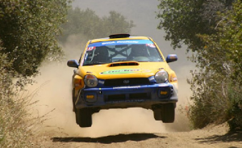
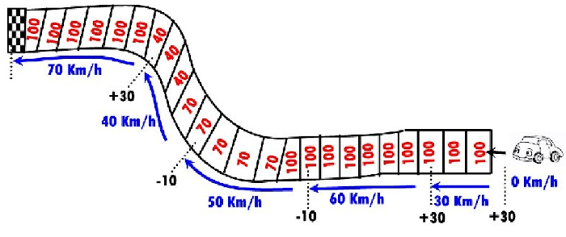

Submit on Mooshak Weekly Problems #07
This problem is from MIUP'2005.

You are about to participate as a co-driver in the next edition of the “Rallye de Monte-Carlo” (organized by ACM - Automobile Clube de Monaco). Before the actual race all drivers are allowed to run on the tracks of the course. In these reconnaissance drives, the co-drivers, who sit next to the drivers, write down shorthand notes on how to best drive the stage.Based on your observations on these notes, you were able to create a map with the advisable speed limits of track sections. Passing by these locations over the speed limit is not recommended, since it can make your car crash. To assist your pilot, you need to devise a winning strategy based on the speed limits. And a nice computer program could be handy for this task.
Given a car rally track marked with speed limits at specific locations, your goal is to devise a strategy to reduce and increase the car speed such that you will run the track at the fastest possible time without ever going over the speed limit.
For simplicity the track is divided into section units, each one of them whith a specific speed limit. At start position your car marks speed 0 Km/h. You can increase your speed or decrease it by multiples of 10. For each 10 Km/h your car advances 1 unit. For example, if you have a current speed of 50 Km/h your car advances 5 units making what we call a move. After each move, you can change again the car speed. You can for instance accelerate to 70 Km/h making your car advance 7 units more, or you can brake to 40 Km/h making your car advance 4 units.
While you are running at a determined speed (in a single move), you can only pass track units with speed limit equal or bigger than your current speed. For calculations purposes, a move starts on the unit immediately after the current position. Due to mechanical limitations, rally cars have a maximum acceleration and braking speed. For example a car with a maximum acceleration speed of 30 Km/h and maximum break speed of 20 Km/h, can only make an increment to the current speed of 30, 20, 10, 0, -10 or -20 Km/h.
Your car starts the race before the first unit of the track (a “virtual” zero unit) and to finish the race it must pass over the last unit of the track, passing the finish line. You can cross the finish line at any speed. Note that arriving at the last unit is not considered terminating the race!
Your task is to give the optimal strategy for the car, that is, the one that minimizes the number of total moves needed to finish the track without ever exceeding the speed limit.
The following figure illustrates a track example and its corresponding optimal strategy (5 moves). This track is also given in sample input.

The first line of input contains an integer \(C\), giving the number of test cases that follow.
Each test case starts with a line containing two integers \(A\) and \(B\) separated by a single space, indicating the maximum values of acceleration and braking. A and B are always multiple of 10.
The next line describes the track. It is given by pairs of integers \(N\) \(V\) indicating a section of \(N\) units with speed limit \(V\) . The end of the track is indicated by a ‘0 0’ pair. \(V\) will always be a positive multiple of 10.
A line with a single number representing the the minimum number of moves that a car needs to make to finish the track.
| \( 1 \leq C \leq 10 \) | Number of test cases |
| \( 10 \leq A,B \leq 240 \) | Values of acceleration and braking |
| \( 10 \leq V \leq 240 \) | Maximum velocity of a unit in a track |
| \( 1 \leq ∑ N \leq 10\,000 \) | Maximum number of units in one track |
Example input
3 30 10 10 100 5 70 3 40 6 100 0 0 40 50 15 100 0 0 40 20 1 50 1 40 1 30 1 20 1 10 1 20 1 30 1 40 1 50 0 0
Example output
5 3 5